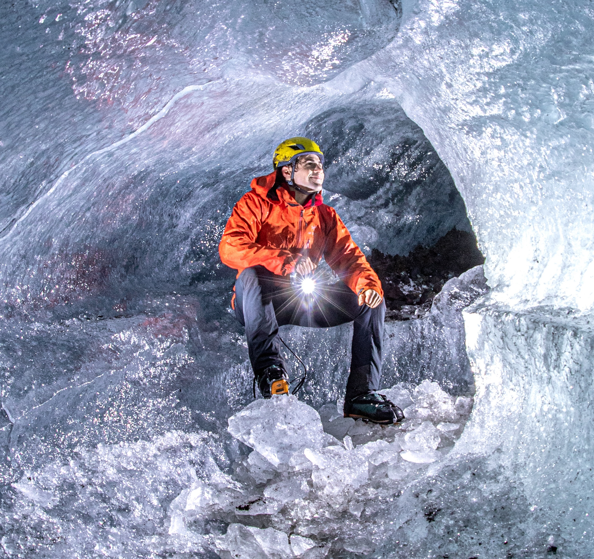

Francesco Li Vigni

Personal Statement
Reliable and enthusiastic individual with the aptitude to seek and
learn new skills when required. During my travels and experiences in
the great and extreme outdoors, I have learnt to be adaptable,
focused and highly organized. Always seeking for chances to
transfer my skills to someone, very oriented and experienced in
leading teams in the outdoors. During my career in the outdoors, I
have gained a lot of hiking and glacier guiding experience, as well as the ability to work under a lot of pressure, meeting strict deadlines, managing teams of up to fifty members, hosting over 50,000 tourists per year. I work very well in teams as well as individually thanks to great communication skills and the ability to speak three languages. Excellent motivator and able to meet strict deadlines with attention to detail at all times.
Education
- West Highland College (UHI) Advanced Certificate in Outdoor Leadership
- Scuola Superiore per Mediatori Linguistici, Palermo - Interpreting and Translation studies (English and French)
BA
- International University (UI), Berlin - Software Development, BSc
Experience
Glacier Operations Manager (2019 - Present)
Arctic Adventures (Reykjavik)
Main Tasks:
Staff Recruitment
Staff Training
Safety Management
Human Resources
Glacier Access Safety
Sales Overview
Product Management
Customer Care
Vehicles Maintenance
Payroll
Property Management
Route Selection
(Glacier) Base Manager (2017-2019)
Arctic Adventures (Reykjavik)
Main Tasks:
Staff Training
Safety Management
Glacier Access Safety
Vehicles Maintenance
Gear and Equipment care
Route Selection
Adventure & Glacier Guide (2017)
Arctic Adventures (Reykjavik)
Main Tasks:
Staff Training
Leading hiking & ice-climbing tours on glaciers
Rafting tours
Hiking tours
Ice Caves Maintenance
Route Selection
Securing glaciers access
Achievements
Hard Ice 3 – Jökla III
Wilderness First Responder
Crevasse rescues Instructor
BCU 3* Sea Kayak
BCU 3* White Water
BCU 3* Open Canoe
BCU 4* White Water (Training)
BCU Foundation safety and rescue training (FSRT)
Swift Water Rescue course
BCU UKCC: Level 1 Coach (canoeing and kayaking)
BCU Paddlesport Leader Award
British Cycling: Level 1 Training Mountain Bike Leadership Award
Leave No Trace Award
Climbing Wall Award (CWA)
Leadershp and Management Training
Skills
Wide Outdoor background
Problem solving
Linguistic competences
Planning and organising
Python & Java Programming
ICT competences
Excellence leadership skills